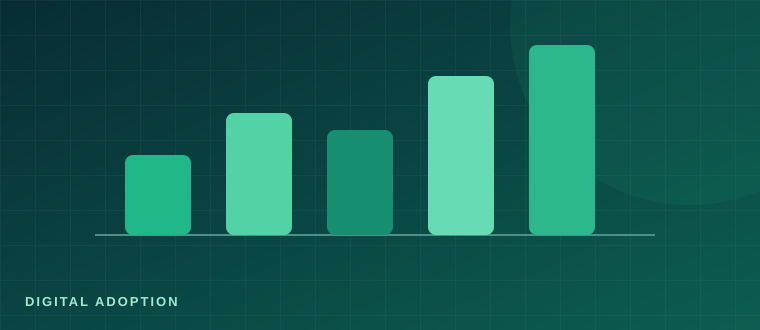

DATA ANALYTICS · DASHBOARD
Saudi Business Digital Adoption
An analytics project exploring digital adoption indicators among Saudi establishments using public statistical data.
View repository ↗Data Analyst · Machine Learning · Data Visualization
I turn complex datasets into clear, actionable insights through data analysis, visualization, and AI-driven solutions.
I'm a Data Analyst and aspiring Data Scientist with a Bachelor's degree in Computer and Information Sciences. My experience spans end-to-end data analysis, interactive reporting, machine learning, and Arabic-language NLP solutions, including OCR and chatbot development.
I enjoy making complex information easier to understand and helping teams make data-informed decisions.
More about my backgroundTools and areas I work with
A selection of projects published on my GitHub.

An analytics project exploring digital adoption indicators among Saudi establishments using public statistical data.
View repository ↗A repository focused on sentiment analysis related to Saudi energy efficiency campaign discussions.
View repository ↗A GitHub project exploring a smart assistant for course recommendations.
View repository ↗A public collection of notebooks exploring natural language processing through practical projects.
View repository ↗Career First Company | Human Resources Development Fund
Data Science Special Interest Group
King Abdulaziz City for Science and Technology (KACST)
Imam Muhammad Ibn Saud Islamic University
July 2020Interested in analytics, data science, or AI? I'd love to connect.